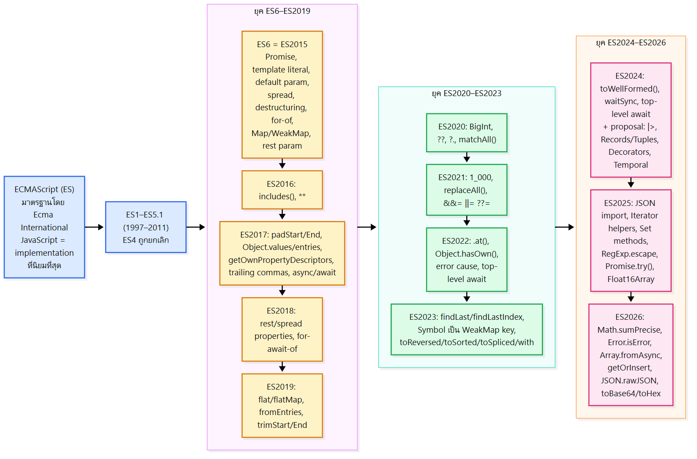
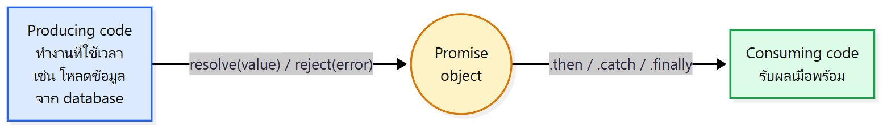
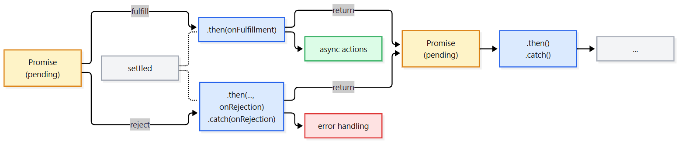
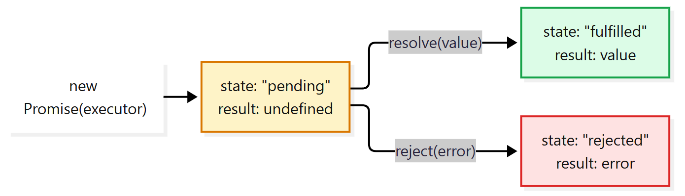
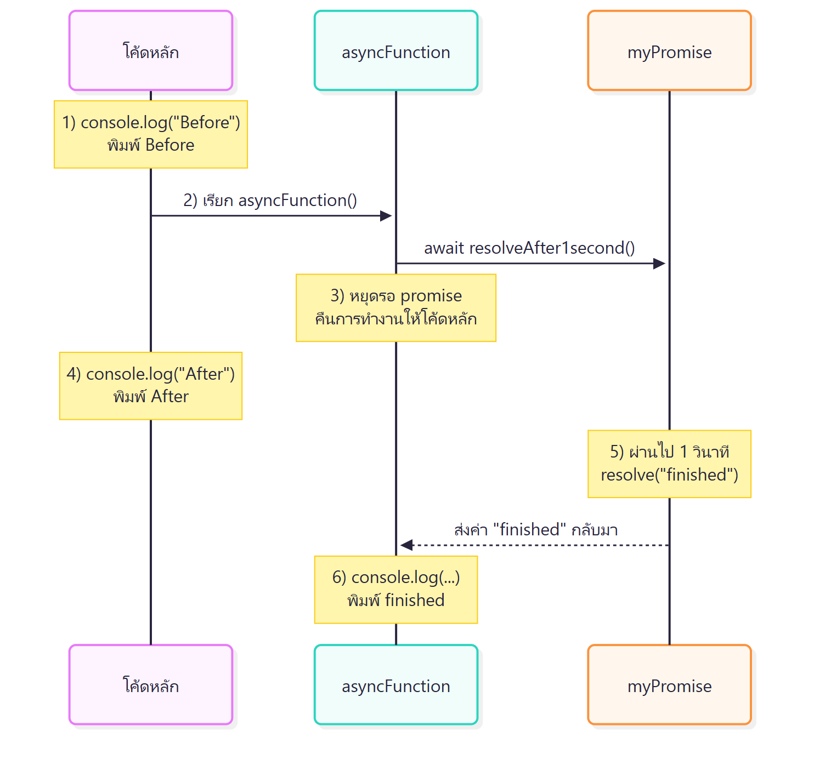
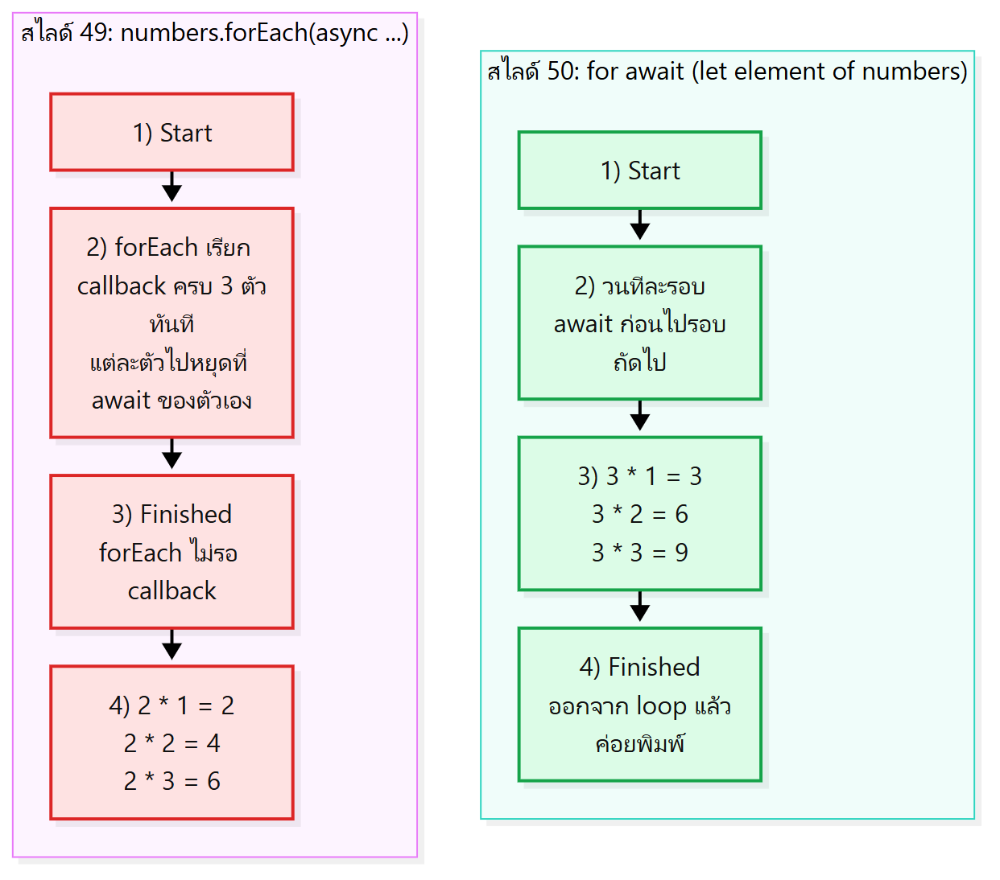
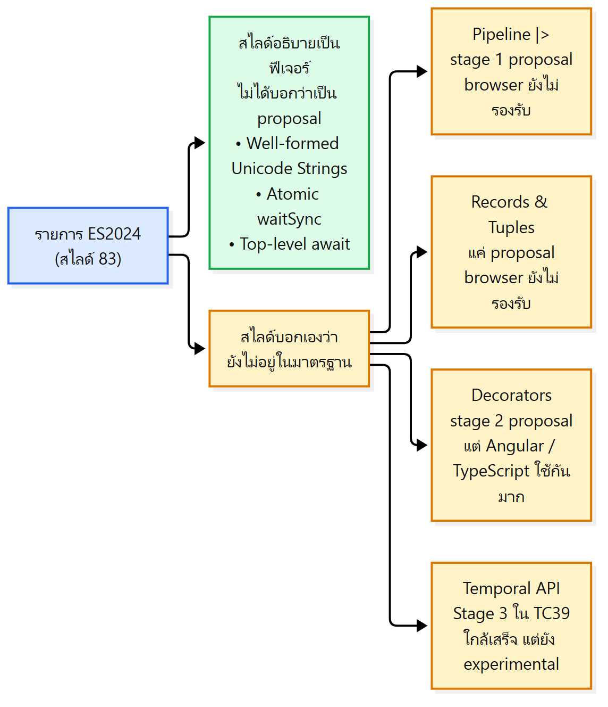

ภาพรวมบทนี้: ECMAScript (ES) คือมาตรฐานภาษาที่ JavaScript ใช้ บทนี้ไล่ดูว่าแต่ละเวอร์ชันตั้งแต่ ES6 (ES2015) ถึง ES2026 เพิ่มฟีเจอร์อะไรเข้ามาบ้าง จุดหนักอยู่ที่ Promise และ async/await (ES6, ES2017, ES2018) ส่วนเวอร์ชันหลัง ๆ เป็นเมธอดและ operator ใหม่ (
??,?.,&&=,.at(),findLast(), Set methods,Math.sumPrecise()ฯลฯ) ที่มีโค้ดตัวอย่างพร้อมผลลัพธ์บทนี้ ไม่มีโจทย์คำนวณ แต่ มีโค้ดเยอะมาก แบบ "รันแล้วได้อะไร" — ทุกตัวอย่างในสรุปนี้เฉลยทีละขั้นและรันตรวจจริงแล้ว (Node.js v22.16.0 และฟีเจอร์ใหม่ที่ Node 22 ยังไม่มี รันใน Chrome 157)
📌 เลขสไลด์ในไฟล์นี้ = เลขหน้า PDF (ตรงกับเลขที่พิมพ์บนสไลด์) ทั้งหมด 124 หน้า หน้า 8, 34, 37, 46, 51, 57, 64, 72, 77, 82, 101, 110 เป็นหน้าคั่นบอกชื่อเวอร์ชัน

1. ECMAScript คืออะไร และบทนี้ต้องทำอะไรได้?
แก่นECMAScript (ES) คือภาษาโปรแกรมแบบ general-purpose ที่ Ecma International เป็นผู้กำหนดมาตรฐาน และ JavaScript คือ implementation ของ ES ที่นิยมที่สุด
Class Objectives (สไลด์ 2) — เรียนจบแล้วต้อง:
- อธิบาย แนวคิดพื้นฐานของ ECMAScript แต่ละเวอร์ชันได้
- ระบุ ได้ว่าฟีเจอร์ไหนมาในเวอร์ชันไหน → ข้อสอบมักถามแบบ "ฟีเจอร์นี้มาใน ES อะไร"
Contents (สไลด์ 3): What is ECMAScript? / ECMAScript versions
ECMAScript (สไลด์ 4):
- ECMAScript (ES) = general-purpose programming language
- กำหนดมาตรฐานโดย Ecma International
- JavaScript = implementation ของ ES ที่ นิยมและใช้กว้างที่สุด
- บทนี้อธิบาย "ES version" ของ JS คือ JS แต่ละรุ่นได้อะไรเพิ่ม
💡 เปรียบเหมือน ES คือ "สเปกรถรุ่นหนึ่ง" ส่วน JavaScript คือ "รถที่ผลิตตามสเปกนั้น" สเปกออกรุ่นใหม่ทุกปี รถก็ได้ความสามารถใหม่ตาม
2. ES มีเวอร์ชันอะไรบ้าง เรียกชื่อยังไง?
แก่นถึง ES5.1 ใช้ชื่อตามเลข edition ตั้งแต่ ES6 ชื่อทางการเปลี่ยนเป็น ES + ปี (ES6 = ES2015) แล้วออกทุกเดือนมิถุนายนปีละครั้ง ES4 ถูกยกเลิก (Abandoned)
| Edition | Official name | Date published |
|---|---|---|
| ES1 | ES1 | June 1997 |
| ES2 | ES2 | June 1998 |
| ES3 | ES3 | December 1999 |
| ES4 | ES4 | Abandoned |
| ES5 | ES5 | December 2009 |
| ES5.1 | ES5.1 | June 2011 |
| ES6 | ES2015 | June 2015 |
| ES7 | ES2016 | June 2016 |
| ES8 | ES2017 | June 2017 |
| ES9 | ES2018 | June 2018 |
| ES10 | ES2019 | June 2019 |
| ES11 | ES2020 | June 2020 |
| ES12 | ES2021 | June 2021 |
| ES13 | ES2022 | June 2022 |
| ES14 | ES2023 | June 2023 |
| ES15 | ES2024 | June 2024 |
| ES16 | ES2025 | June 2025 |
| ES17 | ES2026 | June 2026 |
💡 สูตรแปลงตั้งแต่ ES6: ปี = 2009 + เลข edition เช่น ES6 → 2015, ES11 → 2020, ES17 → 2026 (สังเกตได้จากตาราง)
⚠️ ES4 ในตารางเขียนว่า Abandoned (ไม่มีวันที่ออก) — ระวังข้อสอบถามว่าเวอร์ชันไหนถูกยกเลิก
3. ES6 (ES2015) เพิ่มอะไรมาบ้าง?
แก่นES6 เป็นรุ่นที่เพิ่มฟีเจอร์เยอะที่สุดในบท — Promise สำหรับงาน asynchronous, template literal, default parameter, spread/rest ..., destructuring, for-of, Map/Set/WeakMap และเมธอดใหม่ของ string/object/array
3.1 รายการฟีเจอร์ ES6
แก่นสไลด์ลิสต์ 12 ฟีเจอร์ — 3 ตัวแรก (arrow function, let/const, classes) มีแค่ชื่อในลิสต์ ไม่มีสไลด์อธิบายต่อ
| ฟีเจอร์ | อธิบายในสไลด์ |
|---|---|
| Arrow Functions | ลิสต์ชื่อเท่านั้น |
| let and const | ลิสต์ชื่อเท่านั้น |
| Classes | ลิสต์ชื่อเท่านั้น |
| Promises | สไลด์ 10–20 |
| Template Literals | สไลด์ 21–22 |
| Default parameters | สไลด์ 23 |
| The spread operator | สไลด์ 24–25 |
| Destructuring assignments | สไลด์ 26 |
| For-of loop | สไลด์ 27 |
| Map and Set | สไลด์ 28–31 |
| New String and Object methods | สไลด์ 32 |
| Function Rest Parameter | สไลด์ 33 |
3.2 Promise คืออะไร มีกี่สถานะ?
แก่นPromise คือ object แทน "ผลในอนาคต" ของงาน asynchronous (สำเร็จหรือล้มเหลว) ทำหน้าที่เป็นตัวเชื่อมระหว่าง producing code (ทำงานที่ใช้เวลา) กับ consuming code (รอรับผล) มี 3 สถานะ: pending → fulfilled หรือ rejected
- Promise object = represents the eventual completion (or failure) ของ asynchronous operation และค่าผลลัพธ์ของมัน
- "Producing code" = โค้ดที่ทำอะไรบางอย่างและ ใช้เวลา เช่น โหลดข้อมูลจาก database
- "Consuming code" = โค้ดที่ รับผล จาก producing code เมื่อพร้อม
- Promise คือตัวเชื่อม (link) ระหว่างสองฝั่งนี้

💡 เปรียบเหมือนสั่งอาหารแล้วได้ "บัตรคิว" — ร้าน (producing code) ทำอาหารไป เรา (consuming code) ถือบัตรคิว (Promise) ไว้ อาหารเสร็จหรือหมดก็รู้ผลผ่านบัตรนี้
3 สถานะของ Promise (สไลด์ 11):
| State | ความหมาย |
|---|---|
| pending | สถานะเริ่มต้น ยังไม่ fulfilled และยังไม่ rejected |
| fulfilled | operation สำเร็จ |
| rejected | operation ล้มเหลว |
Promise chain (สไลด์ 12): promise ที่ pending จะถูก fulfilled ด้วย value หรือ rejected ด้วย reason (error) ก็ได้ แล้ว เมธอด then จะถูกเรียก

อ่านแผนภาพ:
- Promise (pending) → fulfill →
.then(onFulfillment)→ ไปทำ async actions - Promise (pending) → reject →
.then(..., onRejection)หรือ.catch(onRejection)→ ไปทำ error handling - ช่วงที่ถูกจัดการแล้วเรียกว่า settled
- ทั้งสองทาง return ออกมาเป็น Promise ใหม่ (pending) ซึ่งต่อ
.then()/.catch()ได้อีก (…) → นี่คือการต่อเป็น chain
3.3 สร้าง Promise (producing code) ยังไง?
แก่นnew Promise(function(resolve, reject) { ... }) — ฟังก์ชันข้างในเรียกว่า executor (producing code) เมื่อสำเร็จเรียก resolve(value) เมื่อผิดพลาดเรียก reject(error) แล้ว state กับ result ภายในจะเปลี่ยนตาม
Constructor syntax (สไลด์ 13):
let promise = new Promise(function(resolve, reject) {
// executor (the producing code)
});
resolveและrejectเป็น callback — โค้ดจริงอยู่ใน executor เท่านั้นresolve(value)— เรียกเมื่องาน เสร็จสำเร็จ พร้อมผลลัพธ์valuereject(error)— เรียกเมื่อ เกิด error โดยerrorคือ error object
resolveและrejectถูกกำหนดไว้ให้แล้วโดย JavaScript engine (pre-defined) เราไม่ต้องเขียนเอง (สไลด์ 15)
Internal properties ของ promise (สไลด์ 14):
| Property | เริ่มต้น | เมื่อเรียก resolve(value) |
เมื่อเรียก reject(error) |
|---|---|---|---|
| state | "pending" |
"fulfilled" |
"rejected" |
| result | undefined |
value |
error |

ตัวอย่าง producing code (สไลด์ 15–17):
let myPromise = new Promise(function (resolve, reject) {
let x = 5;
if (x == 0) {
// after 1 second signal that the job is done with the result "finished"
setTimeout(() => resolve("finished"), 1000);
} else {
// after 1 second signal that the job is finished with an error
setTimeout(() => reject(new Error("No No!")), 1000);
}
});
ไล่ทีละขั้น:
- สร้าง promise → state
"pending", resultundefined x = 5→x == 0เป็น false → เข้าelse- ผ่านไป 1 วินาที เรียก
reject(new Error("No No!"))→ state"rejected", result = error "No No!" (ตรงกับรูปสไลด์ 17) - ถ้าเปลี่ยนเป็น
x = 0จะเข้าif→ 1 วินาทีต่อมาresolve("finished")→ state"fulfilled", result"finished"(รูปสไลด์ 16)
⚠️ สไลด์ 16 ใช้โค้ดเดียวกัน (
let x = 5;) แต่รูปข้างล่างแสดงทางresolve→"fulfilled","finished"ซึ่งจริง ๆ จะเกิดเมื่อx == 0เท่านั้น — ลองรันด้วยx = 5ได้ rejected "No No!" ส่วนx = 0ได้ fulfilled "finished" ให้มองสไลด์ 16 ว่าเป็น "กรณีสำเร็จ" และสไลด์ 17 เป็น "กรณีล้มเหลว"
3.4 รับผลจาก Promise (consuming code) ยังไง?
แก่นลงทะเบียน consumer ด้วย .then, .catch, .finally — .then(onSuccess, onError) รับได้ทั้งสองทาง ส่วน .catch(onError) ใช้เมื่ออยากเน้นหรือสนใจเฉพาะ error
promise.then(
function(result) { /* handle a successful result */ },
function(error) { /* handle an error */ }
);
- argument ตัวแรก ของ
.then= ฟังก์ชันที่ทำงานเมื่อ promise resolved และได้รับ result - argument ตัวที่สอง ของ
.then= ฟังก์ชันที่ทำงานเมื่อ promise rejected และได้รับ error
ตัวอย่าง then (สไลด์ 19):
myPromise.then(
function (value) {
Display(value);
},
function (error) {
Display(error);
}
);
ตัวอย่าง .catch (สไลด์ 20) — ใช้เมื่อ อยากเน้นการจัดการ error หรือ สนใจแค่ error:
myPromise.then(
function (value) {
Display(value);
}
)
.catch((error) => alert(error));
ผลกับ myPromise จากสไลด์ 15 (x = 5 → reject):
- สไลด์ 19: ฟังก์ชันที่สอง (error) ทำงาน →
Display(error)แสดงError: No No! - สไลด์ 20:
.thenไม่มีตัวจัดการ error → error ไหลไปที่.catch→alertแสดงError: No No! - (ถ้า
x = 0ทั้งสองแบบจะแสดงfinished)
💡
Display(...)เป็นฟังก์ชันที่สไลด์ใช้แทน "แสดงผล" (ไม่ได้นิยามไว้ในสไลด์) ตอนลองรันใช้console.logแทนได้✅ รันจริง (แทน
Display/alertด้วยconsole.log):x = 5→Error: No No!ทั้งสองแบบ,x = 0→finished
3.5 Template literal และ tagged template คืออะไร?
แก่นtemplate literal = string ที่สร้างด้วย backtick ` และแทรก expression ได้ด้วย ${...} ส่วน tagged template = เอาฟังก์ชัน (tag) มานำหน้าเพื่อแปลง string ก่อนได้ผลออกมา
const aString = `A String`; // สร้าง string ด้วย backtick
const name = "Wudhichart";
const string = `Hello, ${name}`; // แทรกตัวแปรด้วย ${a_variable}
stringได้ค่าHello, Wudhichart✅ (รันแล้ว)
Tagged templates (สไลด์ 22) — ใช้ แปลง literal string เป็น formatted string:
let aStr = tag`Hello`
function tag(literals, ...substitutions) {
// return a string
}
| ส่วน | ความหมาย |
|---|---|
tag |
tag template — เป็นฟังก์ชันอะไรก็ได้ |
literals |
array ของ literal strings (ส่วนข้อความคงที่) |
substitutions |
array ของ expressions (ส่วนที่อยู่ใน ${}) |
✅ รันจริง:
tag`Hello`→literals = ['Hello'],substitutions = [](ไม่มี${}เลยว่าง) และเพราะในสไลด์ตัวฟังก์ชันมีแค่ comment ไม่มีreturnค่าaStrจึงเป็นundefined— ต้องเขียนreturnเองถึงจะได้ string
3.6 Default parameters ใช้ยังไง?
แก่นกำหนดค่าเริ่มต้นให้ parameter ได้ ถ้าเรียกโดยไม่ส่งค่า จะใช้ค่า default แทน
const someFunction = function(index = 0, value = true) {
/* ... */ }
someFunction()
- เรียก
someFunction()โดยไม่ส่งอะไร →index = 0,value = true✅ (รันแล้ว)
3.7 Spread operator (...) ทำอะไรได้?
แก่น... "กระจาย" array, object หรือ string ออกเป็นสมาชิกทีละตัว ใช้ต่อ array, copy array และแปลง string เป็น array ได้
const a = [1, 2, 3]; //a = 1,2,3
const b = [...a, 4, 5, 6]; //b = 1,2,3,4,5,6 ← ต่อ array
const a = [1, 2, 3]; //a = 1,2,3
const c = [...a]; //c = 1,2,3 ← copy array
- copy array ได้ด้วย spread (สไลด์ 24) — ใช้กับ object และ string ได้ด้วย
- แปลง string เป็น array (สไลด์ 25):
const message = "Hello"; //message = Hello
const arrayized = [...message]; //arrayized = H,e,l,l,o
✅ รันจริง:
b = [1,2,3,4,5,6],c = [1,2,3]และc === aเป็นfalse(เป็น array ใหม่ ไม่ใช่ตัวเดิม),arrayized = ['H','e','l','l','o']⚠️ ในสไลด์ 24 ประกาศ
const aซ้ำสองครั้ง — ถ้าเอาไปรันในไฟล์เดียวกันจะ error เพราะconstประกาศชื่อซ้ำไม่ได้ ให้มองเป็นสองตัวอย่างแยกกัน
3.8 Destructuring assignment คืออะไร?
แก่นดึงค่าบางส่วนออกจาก array (ตามตำแหน่ง) หรือ object (ตามชื่อ key) มาใส่ตัวแปรได้ในบรรทัดเดียว และเปลี่ยนชื่อตัวแปรได้ด้วย key: ชื่อใหม่
Array (ตามตำแหน่ง):
let arr = [1, 2];
let [one, two] = arr; //one = 1, two = 2
Object (ตามชื่อ key):
const person = {
firstName: "Wudhichart",
lastName: "Sawangphol",
lecturer: true,
age: 30,
};
let { firstName: name, age } = person;
//name = Wudhichart, age = 30
firstName: name= เอา value ของ keyfirstNameไปใส่ตัวแปรชื่อname(รูปในสไลด์:firstName—value→name)age= เอา keyageใส่ตัวแปรชื่อเดียวกันage
⚠️ หลังบรรทัดนี้ ตัวแปรที่เกิดคือ
nameกับage— ไม่มีตัวแปรfirstName(รันจริง:firstName is not defined)
3.9 for-of loop ต่างจาก forEach ยังไง?
แก่นfor-of (มาใน ES6) วนทีละสมาชิกของ iterable object เช่น array และต่างจาก forEach() ตรงที่ใช้ break, continue, return ได้
for (const ele of ["a", "b", "c"]) {
console.log(ele);
}
ผลลัพธ์ ✅ (รันแล้ว):
a
b
c
3.10 Map, Set และ WeakMap ต่างกันยังไง?
แก่นES6 เพิ่ม Map และ Set รวมถึง WeakMap — WeakMap รับ key ได้แค่ object, ถูก garbage collect ได้, วนลูปไม่ได้, ไม่มี size และช้ากว่า Map เหมาะกับการผูกข้อมูลกับ object ที่อาจถูกทำลาย (เช่น DOM node) เพื่อเลี่ยง memory leak
- สไลด์ 28 บอกแค่ว่า Map and Set are introduced (ไม่มีตัวอย่างโค้ด)
- WeakMap มาใน ES6 และ key ต้องเป็น object เท่านั้น (สไลด์ 29)
Map vs WeakMap (สไลด์ 30):
| Metrics | Map | WeakMap |
|---|---|---|
| Key Types | ค่าอะไรก็ได้ (any value) | Objects เท่านั้น |
| Garbage Collection | ไม่มีฟีเจอร์นี้ | ถูก garbage collect ได้ ถ้าไม่มี reference อื่นชี้ถึง |
| Iteration | วนได้ด้วย keys(), values(), entries() |
ไม่มีเมธอดเหล่านี้ เพราะ not enumerable |
| Size | มี property size |
ไม่มี size |
| Performance | Fast | Slow |
ควรใช้ตัวไหนเมื่อไหร่ (สไลด์ 31):
| ใช้ Map เมื่อ | ใช้ WeakMap เมื่อ |
|---|---|
| อยากใช้ข้อมูล ชนิดใดก็ได้เป็น key | อยาก ผูกข้อมูลกับ object ที่อาจถูกทำลาย เช่น DOM node |
| อยาก วนลูป key และ value | อยาก หลีกเลี่ยง memory leak |
| อยากรู้ จำนวนคู่ key-value |
💡 เปรียบ WeakMap เหมือน "ป้ายชื่อที่แปะบนกล่อง" — ถ้ากล่อง (object) ถูกทิ้ง ป้ายก็หายไปด้วยเอง ไม่ค้างกินที่ แต่เพราะป้ายหายเองได้ทุกเมื่อ จึงนับจำนวนหรือไล่ดูทั้งหมดไม่ได้
⚠️ ES2023 ขยายให้ Symbol เป็น key ของ WeakMap ได้ด้วย (ดูหัวข้อ 11.2)
3.11 String / Object / Array methods ใหม่ใน ES6 มีอะไร?
แก่นrepeat() ทำซ้ำ string, Object.is() เช็กว่าสองค่าเป็นค่าเดียวกันไหม, Array.find() คืน "ค่า" ตัวแรกที่ผ่านเงื่อนไข, Array.findIndex() คืน "index" ของตัวแรกที่ผ่านเงื่อนไข
| เมธอด | ทำอะไร | ตัวอย่างในสไลด์ |
|---|---|---|
repeat() |
ทำซ้ำ string ตามจำนวนที่กำหนด | 'Hello'.repeat(3) //HelloHelloHello |
Object.is() |
ตัดสินว่า สองค่าเป็นค่าเดียวกันไหม | — |
Array.find() |
คืน ค่าแรก ใน array ที่ผ่าน test function | ด้านล่าง |
Array.findIndex() |
คืน index ของค่าแรก ที่ผ่าน test function | — |
let numbers = [10, 30, 25, 48];
let answer = numbers.find((num) => num < 30);
// Answer = 10
- ไล่จากซ้าย: 10 < 30 ✓ → หยุดทันที คืน 10 (แม้ 25 จะ < 30 ด้วยก็ไม่ถูกคืน เพราะ find เอาแค่ตัวแรก) ✅ รันแล้วได้ 10
⚠️ สไลด์พิมพ์
object.is()(o ตัวเล็ก) — ชื่อที่ใช้งานได้จริงคือObject.is()(O ตัวใหญ่ รันแล้วเป็นฟังก์ชัน)
3.12 Rest parameter (...args) คืออะไร?
แก่นrest parameter ... ทำให้ฟังก์ชันรับ argument ได้ไม่จำกัดจำนวน โดยรวบทั้งหมดเป็น array ใช้สัญลักษณ์เดียวกับ spread แต่ทำหน้าที่กลับกัน (รวบ ไม่ใช่กระจาย)
function findMax(...args) {
let max = 0;
for (let arg of args) {
max = max < arg ? arg : max;
}
return max;
}
args= array ของ argument ทุกตัวที่ส่งเข้ามา- วนทีละตัว: ถ้า
max < argให้max = argไม่งั้นคงค่าเดิม → ได้ค่ามากสุด - สไลด์ไม่ได้แสดงการเรียกใช้ — ลองรันเอง:
findMax(3, 9, 2)→9
💡 จุดสังเกตจากโค้ด:
maxเริ่มที่0ถ้าส่งแต่เลขติดลบ (หรือไม่ส่งเลย) จะได้0(รันแล้ว)⚠️ spread vs rest ใช้
...เหมือนกัน: ฝั่ง เรียกใช้/สร้างค่า ([...a]) = spread กระจายออก, ฝั่ง ประกาศ parameter (function f(...args)) = rest รวบเข้า
4. ES2016 เพิ่มอะไร?
แก่นES2016 เพิ่ม Array.includes() (เช็กว่ามีสมาชิกไหม คืน boolean) และ Exponentiation Operator
- รายการ (สไลด์ 35): Array.includes(), Exponentiation Operator (สไลด์ลิสต์ชื่อเท่านั้น ไม่มีสไลด์อธิบาย)
indexOf (ES6) vs includes (ES2016) (สไลด์ 36):
indexOf (ใช้ใน ES6) |
includes (ES2016) |
|
|---|---|---|
| คืนค่า | index ของสมาชิก หรือ -1 ถ้าไม่มี | boolean (true/false) |
| วิธีเช็กว่ามีไหม | ต้องเทียบว่า ≠ -1 | ใช้ผลได้ตรง ๆ |
let numbers = [10, 30, 25, 48];
let found = numbers.includes(30); //Found = true
✅ รันแล้วได้ true
5. ES2017 เพิ่มอะไร?
แก่นES2017 เพิ่ม padStart/padEnd, Object.values()/entries(), Object.getOwnPropertyDescriptors(), trailing commas และที่สำคัญที่สุดคือ async/await
รายการ (สไลด์ 38): String padding · Object.values() · Object.entries() · Object.getOwnPropertyDescriptors() · Trailing commas · Async functions
5.1 padStart / padEnd ทำงานยังไง?
แก่นเติมตัวอักษรให้ string ยาวครบ targetLength — padStart เติมข้างหน้า padEnd เติมข้างหลัง ถ้าไม่ระบุ padString จะเติมด้วยช่องว่าง
padStart(targetLength [, padString])
padEnd(targetLength [, padString])
let string = "World";
console.log(string.padStart(10)); // " World"
console.log(string.padStart(10, "Hello")); // "HelloWorld"
console.log(string.padEnd(10)); // "World "
console.log(string.padEnd(10, "Hello")); // "WorldHello"
ไล่ทีละบรรทัด ("World" ยาว 5 ต้องเติมอีก 5 ให้ครบ 10):
padStart(10)→ เติมช่องว่าง 5 ช่องข้างหน้า →" World"padStart(10, "Hello")→ เติม "Hello" ข้างหน้า →"HelloWorld"padEnd(10)→ เติมช่องว่าง 5 ช่องข้างหลัง →"World "padEnd(10, "Hello")→ เติม "Hello" ข้างหลัง →"WorldHello"
⚠️ สไลด์ 39 เขียนผลบรรทัดที่ 3 เป็น
"World. "(มีจุด) — รันจริงได้"World "(ช่องว่าง 5 ช่อง ไม่มีจุด) จุดนั้นเป็นการพิมพ์ผิด
5.2 Object.values() กับ Object.entries() ต่างกันยังไง?
แก่นObject.values() คืน array ของ "ค่า" ทุก property ส่วน Object.entries() คืน array ของคู่ [key, value] ทั้งสองใช้กับ array ได้ด้วย
const person = {
firstName: "Wudhichart",
lastName: "Sawangphol",
lecturer: true,
age: 30,
};
let vals = Object.values(person);
//["Wudhichart", "Sawangphol", true, 30]
let ents = Object.entries(person);
// [Array(2), Array(2), Array(2), Array(2)]
// 0: (2) ["firstName", "Wudhichart"]
// 1: (2) ["lastName", "Sawangphol"]
// 2: (2) ["lecturer", true]
// 3: (2) ["age", 30]
- ✅ รันแล้วตรงกับสไลด์ทั้งสองตัว
- สไลด์ 41: "these 2 methods work with arrays" — ✅ ลองรัน
Object.values(["x","y"])→['x','y'],Object.entries(["x","y"])→[['0','x'], ['1','y']](key ของ array คือ index ในรูป string)
5.3 Object.getOwnPropertyDescriptors() ใช้ทำอะไร?
แก่นคืน property descriptor ของทุก own property ใน object ใช้คู่กับ Object.defineProperties() เพื่อ copy property ทั้งหมดไปยัง object อื่น
const person = {
firstName: "Wudhichart",
lastName: "Sawangphol",
lecturer: true,
age: 30,
};
const person2 = {};
Object.defineProperties(
person2,
Object.getOwnPropertyDescriptors(person)
);
ผล (ตามลูกศรในสไลด์): person2 จะมี property เหมือน person ทุกตัว
const person2 = {
firstName: "Wudhichart",
lastName: "Sawangphol",
lecturer: true,
age: 30,
};
✅ รันแล้ว
person2มี 4 property ตรงกัน แต่person2 === personเป็นfalse(เป็นคนละ object)
5.4 Trailing commas คืออะไร?
แก่นใส่คอมมาปิดท้ายรายการตัวสุดท้ายได้โดยไม่ error — สไลด์บอกว่าใช้ได้ใน function declarations และ function calls
const person = {
firstName: "Wudhichart",
lastName: "Sawangphol",
lecturer: true,
age: 30, // ← คอมมาท้ายตัวสุดท้าย (วงกลมแดงในสไลด์)
};
⚠️ ข้อความในสไลด์พูดถึง "function declarations และ function calls" แต่ตัวอย่างเป็น object literal — เวลาตอบให้จำทั้งสองอย่าง: ฟีเจอร์ ES2017 = trailing comma ใน function declaration/call และตัวอย่างในสไลด์ชี้ที่
age: 30,
5.5 async / await ทำงานยังไง?
แก่นasync หน้าฟังก์ชัน = ฟังก์ชันนั้นคืน promise เสมอ ส่วน await = หยุดรอจน promise settle แล้วคืนผลออกมา ระหว่างรอ โค้ดหลักที่อยู่นอกฟังก์ชันทำงานต่อไปได้
- Async/await = syntax พิเศษที่ทำงานกับ promise
asyncหน้าฟังก์ชัน → ฟังก์ชันนั้น always returns a promiseawait→ ทำให้ JavaScript รอจน promise settles แล้ว คืนผลลัพธ์
ตัวอย่าง (สไลด์ 44) — What is the output?
let myPromise = new Promise(function (resolve, reject) {
let x = 0;
if (x == 0) {
// after 1 second signal that the job is done with the result "finished"
setTimeout(() => resolve("finished"), 1000);
} else {
// after 1 second signal that the job is finished with an error
setTimeout(() => reject(new Error("No No!")), 1000);
}
});
function resolveAfter1second() {
return myPromise;
}
const asyncFunction = async () => {
console.log(await resolveAfter1second());
};
console.log("Before");
asyncFunction();
console.log("After");
ผลลัพธ์:
Before
After
finished

ทำไมได้ลำดับนี้:
x = 0→ promise จะ resolve"finished"หลัง 1 วินาทีconsole.log("Before")→ พิมพ์ Before- เรียก
asyncFunction()→ เจอawait→ หยุดรอ promise และคืนการทำงานให้โค้ดหลักทันที console.log("After")→ พิมพ์ After (ไม่ต้องรอ 1 วินาที)- ครบ 1 วินาที promise resolve →
awaitได้ค่า"finished"→ พิมพ์ finished
✅ รันจริงได้ Before → After → finished ตรงกับสไลด์
More examples (สไลด์ 45):
async function f() {
return 2;
}
f().then(alert);
fเป็น async →return 2ถูกห่อเป็น promise ที่ resolve ค่า 2.then(alert)→ เมื่อ resolve จะเรียกalert(2)→ แสดง 2- ✅ รันจริง:
f() instanceof Promiseเป็นtrueและ then ได้ค่า2
💡 เปรียบ
awaitเหมือนกดหยุดชั่วคราวเฉพาะ "ในห้องของฟังก์ชัน async" — คนนอกห้อง (โค้ดหลัก) ยังเดินต่อได้ พอของมาถึงค่อยกลับมาทำต่อในห้อง
6. ES2018 เพิ่มอะไร?
แก่นES2018 ขยาย rest/spread ... ให้ใช้กับ property ของ object และเพิ่ม for-await-of สำหรับวนลูปแบบรอ async ทีละรอบ
รายการ (สไลด์ 47): Rest/Spread Properties · for-await-of
6.1 Rest / Spread properties ของ object ใช้ยังไง?
แก่นrest properties = ดึงบาง key ออกมาเป็นตัวแปร แล้วรวบที่เหลือเป็น object ใหม่ ส่วน spread properties = กระจาย property ของ object เข้าไปใน object ใหม่
Rest properties:
const { firstName, lastName, ...otherProperties } = {
firstName: "Wudhichart",
lastName: "Sawangphol",
lecturer: true,
age: 30,
};
firstName = "Wudhichart",lastName = "Sawangphol"otherProperties = { lecturer: true, age: 30 }← key ที่เหลือทั้งหมด
Spread properties:
const person2 = { firstName, lastName, ...otherProperties };
person2 = { firstName: "Wudhichart", lastName: "Sawangphol", lecturer: true, age: 30 }
✅ รันแล้วตรงตามนี้
6.2 for-await-of ต่างจาก forEach(async) ยังไง?
แก่นfor-await-of วนลูปบน async iterable โดยรอทีละรอบก่อนไปรอบถัดไป ทำให้ "Finished" ถูกพิมพ์หลังลูปจบจริง ส่วน forEach(async ...) ไม่รอ callback จึงพิมพ์ "Finished" ก่อนผลคูณ
ฟังก์ชันช่วย (สไลด์ 49) — ใช้คูณ value ด้วย multiplier แล้วคืนเป็น promise ของ string:
const a = [1, 2, 3];
const calMultiply = (value, multiplier) =>
new Promise((resolve) =>
resolve(`${multiplier} * ${value} = ${multiplier * value}`)
);
แบบไม่ใช้ for-await-of (สไลด์ 49):
console.log("Start");
const processArray = async (numbers) => {
numbers.forEach(async (element) => {
const val = await calMultiply(element, 2);
console.log(val);
});
console.log("Finished");
};
ผลลัพธ์ตามสไลด์:
Start
Finished
2 * 1 = 2
2 * 2 = 4
2 * 3 = 6
แบบใช้ for-await-of (สไลด์ 50):
console.log("Start");
const processArrayWithWait = async (numbers) => {
for await (let element of numbers) {
calMultiply(element, 3).then((val) =>
console.log(val));
}
console.log("Finished");
};
processArrayWithWait(a);
ผลลัพธ์:
Start
3 * 1 = 3
3 * 2 = 6
3 * 3 = 9
Finished

ทำไมต่างกัน:
- สไลด์ 49:
forEachเรียก callback ทั้ง 3 ตัวทันที แต่ละตัวไปหยุดรอที่awaitของตัวเอง →forEachไม่รอ callback → บรรทัดconsole.log("Finished")ทำงานต่อเลย → ผลคูณค่อยตามมาทีหลัง - สไลด์ 50:
for awaitรอทีละรอบ ก่อนไปรอบถัดไป → ผลคูณของแต่ละรอบได้พิมพ์ระหว่างวนลูป → ออกจากลูปแล้วค่อยพิมพ์ Finished เป็นบรรทัดสุดท้าย
⚠️ สไลด์ 49 ไม่มีบรรทัดเรียก
processArray(a);— ถ้ารันตามสไลด์เป๊ะ ๆ จะได้แค่Start(รันแล้ว) ต้องเติมprocessArray(a);ก่อนถึงจะได้ผลตามที่สไลด์เขียน (รันแล้วตรง)⚠️ สไลด์ 50 แปะป้าย "Without for-await-of" บนโค้ดที่ ใช้
for awaitอยู่ — น่าจะหมายถึง "With for-await-of" ป้ายนี้พิมพ์ซ้ำจากสไลด์ 49✅ รันจริงทั้งสองแบบได้ลำดับตรงกับที่สไลด์เขียน
7. ES2019 เพิ่มอะไร?
แก่นES2019 เพิ่ม flat() (แบน array หลายมิติ), flatMap() (map แล้ว flat), Object.fromEntries() (สร้าง object จากคู่ key-value) และ trimStart()/trimEnd()
รายการ (สไลด์ 52): Array.prototype.{flat, flatMap} · Object.fromEntries() · String.prototype.{trimStart, trimEnd}
7.1 flat() ทำงานยังไง?
แก่น.flat(depth) แบน array หลายมิติลงตามจำนวนชั้นที่ระบุ ค่าเริ่มต้นคือ 1 ชั้น
const array = ["Apple", "Orange", ["Grape", ["Pineapple"]]];
console.log(array.flat()); // ["Apple", "Orange", "Grape", Array(1)]
console.log(array.flat(2)); // ["Apple", "Orange", "Grape", "Pineapple"]
- ตัวเลขใน
flat(2)= ระดับ (level) ของ multidimensional array ที่จะแบน flat()แบน 1 ชั้น →["Grape", [...]]แตกออก แต่["Pineapple"]ยังเป็น array →Array(1)flat(2)แบน 2 ชั้น → แตกหมดเหลือ string 4 ตัว
✅ รันจริง: ['Apple','Orange','Grape',['Pineapple']] และ ['Apple','Orange','Grape','Pineapple']
7.2 flatMap() ต่างจาก map() ยังไง?
แก่น.flatMap() = .map() แล้วตามด้วย .flat() (1 ชั้น) ในขั้นเดียว
const numbers = [1, 2, 3, 4, 5, 6];
console.log(numbers.map((num) => [num, num * 2]));
// [Array(2), Array(2), Array(2), Array(2), Array(2), Array(2)]
console.log(numbers.flatMap((num) => [num, num * 2]));
// [1, 2, 2, 4, 3, 6, 4, 8, 5, 10, 6, 12]
map→ ได้ array ซ้อน[[1,2],[2,4],[3,6],[4,8],[5,10],[6,12]]flatMap→ map แล้วแบน →[1,2,2,4,3,6,4,8,5,10,6,12]
✅ รันแล้วตรงกับสไลด์
7.3 Object.fromEntries() ใช้ทำอะไร?
แก่นสร้าง object ใหม่จาก array ของคู่ [key, value] — ทำงานกลับด้านกับ Object.entries()
const person = {
firstName: "Wudhichart",
lastName: "Sawangphol",
lecturer: true,
age: 30, //made up
};
const entries = Object.entries(person);
const person2 = Object.fromEntries(entries); // ← This is a new object.
// Note that person and person2 are not equivalent
entries=[["firstName","Wudhichart"], ["lastName","Sawangphol"], ["lecturer",true], ["age",30]]person2= object ใหม่ ที่มี property เหมือนperson- "not equivalent" → ✅ รันจริง
person === person2และperson == person2เป็นfalseทั้งคู่ เพราะเป็น คนละ object แม้เนื้อหาเหมือนกัน
7.4 trimStart / trimEnd ต่างกันยังไง?
แก่นtrimStart ลบช่องว่างที่ "ต้น" string ส่วน trimEnd ลบช่องว่างที่ "ท้าย" string (สไลด์ไม่มีโค้ดตัวอย่าง)
8. ES2020 เพิ่มอะไร?
แก่นES2020 เพิ่ม BigInt (ตัวเลขไม่จำกัดขนาด), ?? (ค่า default เมื่อ null/undefined), ?. (เข้าถึง property อย่างปลอดภัย) และ matchAll() (หา regex match ทั้งหมด)
รายการ (สไลด์ 58): BigInt · Nullish coalescing operator · Optional chaining operator · String.matchAll()
8.1 BigInt คืออะไร?
แก่นBigInt เป็น primitive data type ใหม่ ที่ไม่มีขีดจำกัดขนาด ยกเว้นหน่วยความจำของเครื่อง (สไลด์ไม่มีโค้ดตัวอย่าง)
8.2 Nullish coalescing (??) ทำงานยังไง?
แก่นa ?? b คืน b (ค่า default) เฉพาะเมื่อ a เป็น null หรือ undefined เท่านั้น นอกนั้นคืน a
const name = "Wudhichart";
const nullish = null;
const name2 = name ?? "Jidapa"; //Wudhichart
const name3 = nullish ?? "Jidapa"; //Jidapa
nameไม่ใช่ null/undefined → ได้nameเอง = Wudhichartnullishเป็นnull→ ได้ค่า default = Jidapa
✅ รันแล้วตรงกับสไลด์
8.3 Optional chaining (?.) ทำงานยังไง?
แก่น?. เช็กก่อนว่าตัวหน้าเป็น null/undefined ไหม ถ้าใช่จะหยุดแล้วคืน undefined แทนที่จะ error — ใช้ได้ทั้งกับ object (obj?.prop) และ array (arr?.[i])
const obj = {
prop: {
subLevelProp: {
value: "Wudhichart",
},
},
};
console.log(obj.prop.subLevelProp.value); // Wudhichart
console.log(obj.prop.secondsubLevelProp.value); // error
console.log(obj?.prop?.subLevelProp?.value); // Wudhichart
console.log(obj?.prop?.secondsubLevelProp?.value); // undefined
ไล่ทีละบรรทัด:
- ทุกชั้นมีจริง → Wudhichart
obj.prop.secondsubLevelPropไม่มี → ได้undefinedแล้วไปอ่าน.valueต่อ → error (✅ รันจริง:TypeError: Cannot read properties of undefined (reading 'value'))- ใช้
?.ทุกชั้นที่มีจริง → Wudhichart - เจอ
secondsubLevelPropเป็น undefined →?.หยุดตรงนั้น คืน undefined ไม่ error
ใช้กับ array (สไลด์ 62):
const cars = null;
console.log(cars[3]); // TypeError: Cannot read property '3' of null
console.log(cars?.[3]); // undefined
⚠️ ถ้าเอาโค้ดสไลด์ 61 หรือ 62 ไปรันรวดเดียวทั้งก้อน บรรทัดที่ error จะ หยุดโปรแกรม บรรทัดถัดไปจึงไม่ได้พิมพ์ — ต้องรันแยกบรรทัด (หรือใส่ try/catch) ถึงจะเห็นครบตามคอมเมนต์ในสไลด์
⚠️ ข้อความ error ใน Node 22 คือ
Cannot read properties of null (reading '3')ต่างจากสไลด์เล็กน้อย แต่ชนิดเหมือนกันคือ TypeError
8.4 String.matchAll() ใช้ยังไง?
แก่นmatchAll() ใช้ regular expression ตัวเดียวกันหา match "ทั้งหมด" ใน string แล้วคืนเป็น iterator ที่วนด้วย for-of ได้
const regexg = /\b(orange)+\b/g;
const fruits = "orange, banana, orange, apple, orange, apple";
const matched = fruits.matchAll(regexg);
for (result of matched) {
console.log(result);
}
ผลลัพธ์ (สไลด์ไม่ได้เขียนไว้ — ✅ รันจริง) พิมพ์ 3 ครั้ง ตาม "orange" 3 ตัว แต่ละครั้งเป็น array ที่มี match เต็ม + group:
| ครั้งที่ | ค่าใน array | index |
|---|---|---|
| 1 | ['orange', 'orange'] |
0 |
| 2 | ['orange', 'orange'] |
16 |
| 3 | ['orange', 'orange'] |
31 |
(แต่ละตัวมี input = string เต็ม และ groups: undefined ด้วย)
9. ES2021 เพิ่มอะไร?
แก่นES2021 เพิ่ม numeric separator _, replaceAll() และ logical assignment operators &&=, ||=, ??=
รายการ (สไลด์ 65): Numeric Separator · String.prototype.replaceAll() · Logical Assignment Operators · WeakRef and Finalizers (ลิสต์ชื่อเท่านั้น ไม่มีสไลด์อธิบาย)
9.1 Numeric separator คืออะไร?
แก่นใช้ underscore _ คั่นตัวเลขให้อ่านง่าย ค่าจริงไม่เปลี่ยน
const billion = 1000_000_000;
console.log(billion);
✅ รันได้ 1000000000
9.2 replaceAll() ต่างจาก replace() ยังไง?
แก่นreplaceAll() แทนที่ "ทุกตำแหน่ง" ที่เจอ string นั้น
const str =
"Wudhichart waits for the man on the stage at the first row as the first person.";
const newStr = str.replaceAll("first", "last");
console.log(newStr);
✅ รันได้:
Wudhichart waits for the man on the stage at the last row as the last person.
"first" ทั้ง 2 ตัวถูกเปลี่ยนเป็น "last"
9.3 &&=, ||=, ??= ทำงานยังไง?
แก่นรวม logical operator กับการ assign — &&= assign เมื่อซ้าย truthy, ||= assign เมื่อซ้าย falsy, ??= assign เมื่อซ้าย nullish (null/undefined) ถ้าเงื่อนไขไม่ผ่าน ฝั่งขวาจะไม่ถูกประเมินเลย
| Operator | ชื่อ | ประเมินฝั่งขวาและ assign เมื่อ... |
|---|---|---|
&&= |
logical AND assignment | ฝั่งซ้าย truthy |
||= |
logical OR assignment | ฝั่งซ้าย falsy |
??= |
nullish coalescing assignment | ฝั่งซ้าย nullish (null หรือ undefined) |
&&= (สไลด์ 69):
let x = 1;
let y = 0;
let z = 5;
x &&= z;
console.log(x);
// Expected output: 5
y &&= z;
console.log(y);
// Expected output: 0
x = 1truthy → assignx = z→ 5y = 0falsy → ไม่ assign → คง 0
||= (สไลด์ 70):
y = 0;
x = 1;
z = 5;
x ||= z;
console.log(x);
// Expected output: 1
y ||= z;
console.log(y);
// Expected output: 5
x = 1truthy (ไม่ใช่ falsy) → ไม่ assign → คง 1y = 0falsy → assigny = z→ 5
??= (สไลด์ 71):
const a = { age: 36 };
a.age ??= 20;
console.log(a.age);
// Expected output: 36
a.height ??= 175;
console.log(a.height);
// Expected output: 175
a.age = 36ไม่ nullish → ไม่ assign → 36a.heightไม่มี =undefined(nullish) → assign → 175 (object กลายเป็น{ age: 36, height: 175 })
✅ รันทั้ง 3 สไลด์ได้ 5, 0, 1, 5, 36, 175 ตรงกับสไลด์
💡 จำง่าย:
&&="ถ้ามีอยู่แล้ว ให้เปลี่ยน" |||="ถ้าว่าง/เป็นเท็จ ให้เติม" |??="ถ้าไม่มีจริง ๆ (null/undefined) ให้เติม" — ต่างจาก||=ตรงที่0หรือ""ไม่นับว่า "ไม่มี"
10. ES2022 เพิ่มอะไร?
แก่นES2022 เพิ่ม .at() (index ของ array/string), Object.hasOwn() (เช็ก own property), error cause (แนบสาเหตุของ error) และ top-level await (ใช้ await นอกฟังก์ชันได้)
รายการ (สไลด์ 73):
- Method
.at()of indexable values Object.hasOwn(obj, propKey)- Cause of
error - Top-level await modules — JavaScript ให้ใช้
awaitนอกฟังก์ชัน ได้ (สไลด์นี้ไม่มีตัวอย่าง ดูตัวอย่างในหัวข้อ 12.3)
10.1 .at() ใช้ยังไง?
แก่น.at(i) คืนสมาชิกที่ index i ของค่าที่ index ได้ (array, string)
const arr = [1,2,3,4]
console.log(arr.at(2)) //3
const str = "1234"
console.log(str.at(3)) //4
- index เริ่มที่ 0 →
arr.at(2)= ตัวที่ 3 = 3,str.at(3)= ตัวที่ 4 = "4" ✅ รันแล้ว
10.2 Object.hasOwn() คืออะไร?
แก่นObject.hasOwn(obj, propKey) เช็กว่า object มี property ชื่อนี้เป็นของตัวเองไหม (ดูที่ "มี key" ไม่ใช่ดูค่า)
let object = { foo: false }
console.log(Object.hasOwn(object, "foo")) // true
- แม้ค่าของ
fooจะเป็นfalseแต่ keyfooมีอยู่ → true ✅ รันแล้ว
10.3 Cause of error ใช้ยังไง?
แก่นตอน throw error ใหม่ แนบ error ต้นเหตุไว้ใน option { cause: error } ได้
try {
doSomeComputationThatThrowAnError()
} catch (error) {
throw new Error('This is error', { cause: error })
}
- จับ error เดิมไว้ แล้ว throw error ใหม่ข้อความ
'This is error'โดยเก็บ error เดิมไว้ใน.cause - ✅ ลองรันจำลอง: error ใหม่มี
message = 'This is error'และcause= error ตัวเดิม
11. ES2023 เพิ่มอะไร?
แก่นES2023 เพิ่มการค้นหาจากท้าย array (findLast, findLastIndex), ให้ Symbol เป็น key ของ WeakMap ได้ และเมธอดแก้ array แบบคืนสำเนาใหม่ (toReversed, toSorted, toSpliced, with)
รายการ (สไลด์ 78): Find array from the last · Symbols as WeakMap keys · Change Array by Copy
11.1 findLast / findLastIndex ทำงานยังไง?
แก่นค้นหาจาก "ท้ายไปหน้า" ตามเงื่อนไข — findLast() คืนค่า, findLastIndex() คืน index
const aArray = [5, 10, 15, 20];
const aLastElement = aArray.findLast((n) => n > 10);
const aLastIndex = aArray.findLastIndex((n) => n > 10);
console.log(`The last element is ${aLastElement} at ${aLastIndex}.`);
ไล่จากท้าย: 20 > 10 ✓ → หยุดทันที → ค่า 20 อยู่ index 3
✅ รันได้:
The last element is 20 at 3.
💡 เทียบกับ ES6:
findไล่จากหน้า → ได้ 15 (index 2) |findLastไล่จากท้าย → ได้ 20 (index 3) (รันเทียบแล้ว)
11.2 Symbol เป็น key ของ WeakMap ได้ยังไง?
แก่นตั้งแต่ ES2023 ใช้ Symbol เป็น key ของ WeakMap ได้ (เดิม WeakMap รับ key เป็น object เท่านั้น — สไลด์ 29)
const weakMap = new WeakMap();
const key = Symbol("my symbol");
const someValue = 5;
weakMap.set(key, someValue);
console.log(weakMap.get(key));
✅ รันได้ 5
11.3 Change Array by Copy มีเมธอดอะไร?
แก่นเมธอดกลุ่มนี้ "แก้" array โดยคืน copy ใหม่ ไม่แตะ array เดิม (สไลด์ลิสต์ชื่อและ parameter ไม่มีตัวอย่างโค้ด)
Array.prototype.toReversed()Array.prototype.toSorted(compareFn)Array.prototype.toSpliced(start, deleteCount, ...items)Array.prototype.with(index, value)
12. ES2024 เพิ่มอะไร?
แก่นสไลด์ลิสต์ 7 หัวข้อ — 3 ตัวแรก (toWellFormed, waitSync, top-level await) อธิบายเป็นฟีเจอร์ ส่วนอีก 4 ตัว (pipeline |>, Records/Tuples, Decorators, Temporal API) สไลด์บอกเองว่ายังเป็น proposal ไม่อยู่ในมาตรฐาน
รายการ (สไลด์ 83): Well-formed Unicode Strings · Atomic waitSync · Top-level await · The Pipeline Operator · Records and Tuples · Decorators · Temporal API

12.1 Well-formed Unicode Strings แก้ปัญหาอะไร?
แก่นUnicode string ที่ format ผิดทำให้เกิดปัญหาไม่คาดคิด โดยเฉพาะแอปที่มีผู้ใช้ทั่วโลกหรือพึ่ง API มาก — toWellFormed() ช่วยจัด Unicode ให้ถูกต้อง ลด encoding error และเข้ากันได้ข้ามแพลตฟอร์มดีขึ้น
- ปัญหา (สไลด์ 84): การจัดการ Unicode string ใน JS มักไม่สม่ำเสมอ โดยเฉพาะตัวอักษรหลายภาษาและสัญลักษณ์ → string ที่ format ผิดอาจทำให้เกิดปัญหา โดยเฉพาะแอปที่ targeting global users หรือ พึ่ง API interactions มาก
- ทางแก้ (สไลด์ 85):
toWellFormed()ทำให้จัดการ Unicode ได้น่าเชื่อถือ สำหรับแอปที่รับ input จากหลาย locale หรือ character set ซับซ้อน → ลด encoding errors และ เพิ่ม cross-platform compatibility
const problematicString = "test \uD800";
console.log(problematicString);
console.log(problematicString.toWellFormed());
✅ รันจริง (สไลด์ไม่ได้เขียนผล):
"\uD800"เป็นอักขระที่อยู่โดด ๆ (ไม่ well-formed) —toWellFormed()เปลี่ยนตัวนั้นเป็น�(แสดงเป็น�) → บรรทัดที่สองได้test �
12.2 Atomic waitSync ใช้ทำอะไร?
แก่นJS เป็น single-threaded ทำให้การแชร์ memory ระหว่าง thread (worker) เสี่ยง race condition — waitSync ให้ thread หยุดรอจนเงื่อนไขใน shared memory เป็นจริง เพื่อรักษา synchronization และ data integrity
- ปัญหา: การออกแบบแบบ single-threaded ทำให้จัดการ concurrency ยาก โดยเฉพาะตอน แชร์ memory ระหว่าง thread ใน worker → รักษา synchronized data access เพื่อเลี่ยง race condition ทำได้ยาก
- ES2024 เสนอ
waitSync→ thread pause จนเงื่อนไขใน shared memory เป็นจริง → รับประกัน synchronization และ data integrity - ประโยชน์: เป็น game-changer สำหรับแอป real-time data เช่น collaborative tools หรือ games → concurrency control น่าเชื่อถือขึ้น เพิ่ม performance และ stability ของแอป multi-threaded
const sharedArray = new Int32Array(new SharedArrayBuffer(1024));
// Example usage in a hypothetical shared memory scenario
function performSynchronizedOperation(index, value) {
Atomics.waitSync(sharedArray, index, 0); // Wait until condition is met
sharedArray[index] = value;
Atomics.notify(sharedArray, index, 1); // Notify other threads of the update
}
ขั้นตอน: (1) waitSync รอจนเงื่อนไขที่ตำแหน่ง index เป็นจริง → (2) เขียนค่า value ลง shared array → (3) Atomics.notify แจ้ง thread อื่นว่ามีการอัปเดต
⚠️ ลองเช็กจริง:
typeof Atomics.waitSyncได้undefinedทั้งใน Node 22 และ Chrome 157 (มีแต่Atomics.wait) — สไลด์เองก็เขียนว่าเป็น "hypothetical" scenario ถ้าข้อสอบถามให้ตอบตามสไลด์ แต่รู้ไว้ว่าโค้ดนี้รันจริงไม่ได้
12.3 Top-level await ช่วยอะไร?
แก่นเดิม await ใช้ได้แค่ใน async function ต้องห่อโค้ดด้วยฟังก์ชันเพิ่ม (boilerplate) — top-level await ให้ใช้ await ตรงระดับ module ได้เลย
- เดิม:
awaitถูกจำกัดให้อยู่ใน async functions → ต้องห่อโค้ดในฟังก์ชันเพิ่ม → เกิด boilerplate ที่ไม่จำเป็น - ES2024: ใช้
awaitที่ module level ได้โดยตรง → โค้ด async กระชับขึ้น ไม่ต้องมี async function เพิ่ม
const data = await fetchData();
console.log(data);
- ทำให้ async programming เข้าถึงง่ายและเข้าใจง่ายขึ้น
- มีประโยชน์มากกับ data-fetching modules หรือแอปที่พึ่ง API calls → จัดโค้ดเป็นระเบียบและชัดขึ้น
- ✅ ลองรันใน ES module (
.mjs) โดยนิยามfetchDataเองเป็น async function →awaitนอกฟังก์ชันทำงานได้ (fetchDataในสไลด์ไม่ได้นิยามไว้)
⚠️ สไลด์ 73 จัด "Top-level await modules" ไว้ใน ES2022 แต่สไลด์ 83/88 จัด "Top-level await" ไว้ใน ES2024 อีกครั้ง — สไลด์ขัดกันเอง ถ้าเจอข้อสอบถามเวอร์ชันให้ถามอาจารย์ หรือดูตัวเลือกที่มี
12.4 Pipeline operator (|>) คืออะไร?
แก่น|> ส่ง output ของฟังก์ชันหนึ่งเป็น input ของฟังก์ชันถัดไป แทนการเรียกฟังก์ชันซ้อนกันหลายชั้น ทำให้อ่านง่าย — แต่ยังเป็น stage 1 proposal ที่ browser ยังไม่รองรับ
- สถานะ: experimental, stage 1 proposal → browser ปัจจุบันยัง ไม่รองรับ
- ปัญหาที่แก้: การแปลงข้อมูลด้วย nested function calls ทำให้โค้ดซับซ้อน อ่านยาก ดูแลยาก
|>ให้เขียนแบบ functional → ส่ง output ต่อเป็น input ถัดไป → readability ดีขึ้น จัดการ transformation ซับซ้อนได้เป็นระเบียบ
const processedValue = -10
|> (n => Math.max(0, n))
|> (n => Math.pow(n, 2))
|> Math.ceil;
ไล่ทีละขั้น (รันไม่ได้เพราะยังเป็น proposal แต่คิดตามลำดับได้):
- เริ่มที่
-10 Math.max(0, -10)→ 0Math.pow(0, 2)→ 0Math.ceil(0)→ 0 →processedValue = 0
(✅ ลองรันแบบเรียกทีละขั้นธรรมดาได้ 0)
12.5 Records and Tuples คืออะไร?
แก่นRecords (#{}) และ Tuples (#[]) เป็นโครงสร้างข้อมูลที่แก้ไขไม่ได้หลังสร้าง (immutable) ใช้แทน object และ array แบบง่าย ป้องกันการเปลี่ยนข้อมูลโดยไม่ตั้งใจ — แต่ยังเป็นแค่ proposal
- ยัง ไม่อยู่ใน JavaScript ทางการ เป็นแค่ proposal → browser ปัจจุบัน ไม่รองรับ
- ปัญหาที่แก้: การรักษาข้อมูลไม่ให้เปลี่ยนใน JS ต้องใช้วิธีซับซ้อน โดยเฉพาะแอปที่ state management สำคัญ เช่น framework อย่าง React
- Records and Tuples = เปลี่ยนไม่ได้หลังสร้าง → stable, ป้องกัน accidental changes → เป็นทางเลือกที่ง่ายกว่า object และ array
const drivingLicence = #{ // Record (เหมือน object แต่แก้ไม่ได้)
country: "Thailand",
number: 123456789870,
};
const wallet = #[ // Tuple (เหมือน array แต่แก้ไม่ได้)
drivingLicence,
];
💡 เปรียบ Record เหมือน "ใบขับขี่ที่เคลือบพลาสติกแล้ว" — อ่านได้ แต่แก้ข้อมูลบนบัตรไม่ได้
12.6 Decorators ทำอะไร?
แก่นdecorator คือฟังก์ชันที่ขยายความสามารถของ class/method โดยไม่แก้โค้ดเดิม ใช้สัญลักษณ์ @ นำหน้า เหมาะกับการเพิ่ม logging, validation, access control — ยังเป็น stage 2 proposal แต่ Angular และ TypeScript ใช้กันแพร่หลาย
- สถานะ: stage 2 proposal → ยังไม่อยู่ในมาตรฐาน ECMAScript แต่ framework อย่าง Angular และ TypeScript ใช้กันกว้างขวาง
- นิยาม: ฟังก์ชันที่ enhance method ที่มีอยู่ → แก้พฤติกรรมของ object โดยไม่แก้โค้ดต้นฉบับ = ขยาย functionality
- มักใช้กับ class และขึ้นต้นด้วย
@
// A simple decorator
function log(target, key, descriptor) {
console.log(`Logging ${key} function`);
return descriptor;
}
class Example {
@log
greet() {
console.log("Hello, world!");
}
}
const example = new Example();
example.greet(); // Logs "Logging greet function" and "Hello, world!"
@logวางบน methodgreet→ ฟังก์ชันlogได้รับข้อมูล method (key="greet") → พิมพ์Logging greet functionexample.greet()→ พิมพ์Hello, world!- (รันใน Node 22 ไม่ได้ เพราะยังเป็น proposal — ผลตามคอมเมนต์ในสไลด์)
ประเภทของ decorator (สไลด์ 96):
| ประเภท | ใช้กับ |
|---|---|
| Class Decorators | ทั้ง class |
| Method Decorators | method |
| Accessor Decorators | getters และ setters |
| Property Decorators | property ของ class |
| Parameter Decorators | parameter ของ method |
- ประโยชน์: เพิ่มฟีเจอร์อย่าง logging, validation, access control โดยไม่ทำให้ core logic รก
💡 เปรียบ decorator เหมือน "เคสโทรศัพท์" — สวมเพิ่มความสามารถ (กันกระแทก มีที่ใส่บัตร) โดยไม่ต้องแกะโทรศัพท์
12.7 Temporal API แก้ปัญหาอะไร?
แก่นDate object ของ JS ใช้ยาก ไม่เคยปรับปรุงตั้งแต่สร้าง (สืบมาจาก Java ที่เลิกใช้ไปแล้ว) — Temporal API มาแทนด้วยการรองรับ time zone, parse string แบบ strict, ปฏิทินที่ไม่ใช่ Gregorian และคำนวณวันเวลาง่ายขึ้น โดยไม่ต้องพึ่ง library ภายนอก — ตอนนี้ยังอยู่ Stage 3
ปัญหาของ Date (สไลด์ 97):
Dateobject น่าเบื่อ/ใช้ยาก และเป็นปัญหาเรื้อรังของ JS- เลยมี library อย่าง moment.js และ date-fns ให้นักพัฒนาจัดการ Date ได้ง่าย
Dateมาจาก Java ซึ่งต่อมา Java เลิกใช้แล้ว แต่ JS เก็บไว้เพื่อ backward compatibility- ไม่เคยถูกแก้ไข ตั้งแต่สร้างมา
สถานะ (สไลด์ 98): ยัง experimental อยู่ที่ Stage 3 ใน TC39 process = ใกล้เสร็จ แต่ ยังไม่อยู่ในมาตรฐาน ECMAScript — เป้าหมายคือยกระดับการจัดการวันเวลาและแก้ข้อจำกัดเดิม
Why Use Temporal API? (สไลด์ 99):
| เหตุผล | อธิบาย |
|---|---|
| Comprehensive Features | ชุดฟีเจอร์ครบสำหรับจัดการวันเวลา เหนือกว่า Date เดิม |
| Native Time Zone Support | รองรับ ทุก time zone ในตัว → คำนวณข้ามภูมิภาคได้แม่นยำ |
| No External Dependencies | ทำงานเองได้ ไม่ต้องใช้ library ภายนอก → พัฒนาง่ายขึ้น performance ดีขึ้น |
Key Features (สไลด์ 100):
| Feature | อธิบาย |
|---|---|
| Support for Time Zones | รองรับ time zone หลากหลายแบบ first-class |
| String Format Parsing | parse string format แบบ strict ได้น่าเชื่อถือ |
| Non-Gregorian Calendars | รองรับ ปฏิทินที่ไม่ใช่ Gregorian |
| Simplified Date Time Computations | API ตรงไปตรงมา คำนวณวันเวลาง่ายขึ้น |
13. ES2025 เพิ่มอะไร?
แก่นES2025 เพิ่ม import JSON เป็น module, iterator helpers แบบ lazy, เมธอดเซตทางคณิตศาสตร์ของ Set, RegExp.escape() + inline modifiers + duplicate named groups, Promise.try() และ Float16Array
รายการ (สไลด์ 102): Import Attributes / JSON Modules · Iterator Helpers · Set Methods and Relationships · RegExp Enhancements · Promise.try() · Float16 Support
13.1 Import Attributes / JSON Modules ใช้ยังไง?
แก่นimport ไฟล์ JSON เป็น module ได้โดยตรง โดยใส่ attribute with { type: 'json' } ให้ runtime รู้ว่าต้องจัดการไฟล์แบบไหน ทำได้ทั้งแบบ static และ dynamic import
// Synchronous import
import config from './config.json' with { type: 'json' };
console.log(config.apiUrl);
// Dynamic import
const cfg = await import('./config.json', { with: { type: 'json' } });
console.log(cfg.default.apiUrl);
- แบบ static → ได้ข้อมูล JSON ใน
configตรง ๆ - แบบ dynamic → ผลเป็น module object ข้อมูลอยู่ใน
.defaultจึงเขียนcfg.default.apiUrl - (รันไม่ได้เพราะสไลด์ไม่ได้ให้ไฟล์
config.json)
13.2 Iterator Helpers ต่างจาก map/filter ของ array ยังไง?
แก่นเมธอดสำหรับ functional programming บน iterator แบบ lazy — ไม่สร้าง array ใหม่ทันทีทุกขั้นเหมือน .map()/.filter() ของ array เหมาะกับ pipeline ที่ประมวลผล data stream
const it = Iterator.from([1, 2, 3, 4, 5])
.filter(n => n % 2 === 0) // keep evens
.map(n => n * n) // square
.take(2); // first two
console.log(it.toArray()); // [4, 16]
ไล่ทีละขั้น:
filterเลขคู่ → 2, 4mapยกกำลังสอง → 4, 16take(2)เอา 2 ตัวแรก → 4, 16toArray()→ [4, 16]
✅ รันแล้วได้ [ 4, 16 ]
13.3 Set Methods ใหม่มีอะไรบ้าง?
แก่นSet มี set operation ทางคณิตศาสตร์ในตัวแล้ว — union, intersection, difference, symmetricDifference, isSubsetOf, isDisjointFrom
const A = new Set([1, 2, 3]);
const B = new Set([3, 4, 5]);
console.log(A.union(B)); // Set {1, 2, 3, 4, 5}
console.log(A.intersection(B)); // Set {3}
console.log(A.difference(B)); // Set {1, 2}
console.log(A.symmetricDifference(B)); // Set {1, 2, 4, 5}
console.log(A.isSubsetOf(B)); // false
console.log(A.isDisjointFrom(B)); // false
| เมธอด | ความหมาย | ผล |
|---|---|---|
union |
อยู่ใน A หรือ B | {1, 2, 3, 4, 5} |
intersection |
อยู่ในทั้ง A และ B | {3} |
difference |
อยู่ใน A แต่ ไม่อยู่ ใน B | {1, 2} |
symmetricDifference |
อยู่ในฝั่งเดียว (ไม่อยู่ทั้งคู่) | {1, 2, 4, 5} |
isSubsetOf |
A อยู่ใน B ทั้งหมดไหม | false (1, 2 ไม่อยู่ใน B) |
isDisjointFrom |
A กับ B ไม่มีสมาชิกร่วมเลยไหม | false (มี 3 ร่วม) |
✅ รันแล้วตรงทุกบรรทัด
13.4 RegExp Enhancements มีอะไร?
แก่นRegExp.escape() escape อักขระพิเศษใน string ให้ใช้ใน regex ได้อย่างปลอดภัย, inline modifiers ใส่ flag เฉพาะบางส่วนของ regex, duplicate named capture groups ใช้ชื่อ group ซ้ำได้ถ้าอยู่คนละทางเลือก (alternative)
RegExp.escape() (สไลด์ 106):
const userInput = "hello.*+?^${}()|[]\\world";
const safe = RegExp.escape(userInput);
console.log(safe); // "hello\.\*\+\?\^\$\{\}\(\)\|\[\]\\world"
- อักขระพิเศษของ regex (
. * + ? ^ $ { } ( ) | [ ] \) ถูกใส่\นำหน้าทุกตัว → เอา input ผู้ใช้ไปสร้าง regex ได้โดยไม่ถูกตีความเป็นคำสั่ง
⚠️ รันจริงใน Chrome 157 ได้
\x68ello\.\*\+\?\^\$\{\}\(\)\|\[\]\\world— ตัวhตัวแรกถูกเปลี่ยนเป็น\x68ไม่ใช่helloแบบที่สไลด์เขียน ส่วนอักขระพิเศษที่เหลือตรงกับสไลด์ (Node 22 ยังไม่มีRegExp.escape)
Inline RegExp Modifiers (สไลด์ 107) — ใส่ flag แค่บางส่วนของ regex:
const re = /a(?i:b)c/; // only 'b' is case-insensitive
console.log("aBc".match(re)); // ✅ match
(?i:b)= เฉพาะbไม่สนตัวพิมพ์เล็ก/ใหญ่ →"aBc"จึง match (✅ Chrome 157 ได้aBc)
Duplicate Named Capture Groups (สไลด์ 107) — ใช้ชื่อ group ซ้ำได้ถ้าอยู่คนละ alternative:
const re = /(?:(?<num>\d+)|(?<num>[a-z]+))/;
console.log("123".match(re).groups.num); // "123"
console.log("abc".match(re).groups.num); // "abc"
- group ชื่อ
numมีสองที่ (ตัวเลข\d+หรือ ตัวอักษร[a-z]+) → อันไหน match ก็เข้าgroups.num - ✅ Chrome 157 ได้
123และabc(Node 22 ยัง error: "Duplicate capture group name")
⚠️ สไลด์ 107 ประกาศ
const reซ้ำสองครั้ง — ต้องรันแยกกัน
13.5 Promise.try() ใช้ทำอะไร?
แก่นวิธีมาตรฐานในการห่อฟังก์ชันที่อาจ throw แบบ synchronous หรือคืน Promise ให้ exception ถูกจัดการเป็น promise rejection เสมอ (ไปเข้า .catch ได้)
function mayThrow() {
if (Math.random() > 0.5) throw new Error("Oops");
return 42;
}
Promise.try(() => mayThrow())
.then(val => console.log("Value:", val))
.catch(err => console.error("Caught:", err.message));
Math.random()สุ่ม → ผลมี 2 แบบ:- ถ้า > 0.5 → throw → กลายเป็น rejection →
Caught: Oops - ไม่งั้น → คืน 42 →
Value: 42
- ถ้า > 0.5 → throw → กลายเป็น rejection →
- ✅ รันใน Chrome 157 หลายรอบ ได้ทั้ง
Value: 42และCaught: Oopsสลับกันตามการสุ่ม
13.6 Float16 Support คืออะไร?
แก่นเพิ่ม typed array Float16Array และเมธอดสำหรับเลขทศนิยม half-precision (16-bit) ใช้ memory ครึ่งหนึ่งของ Float32Array และหนึ่งในสี่ของ Float64Array แลกกับความแม่นยำที่ลดลง
const arr = new Float16Array([0.1, 0.2, 0.3]);
console.log(arr[0]); // approximated float16 value
const dv = new DataView(new ArrayBuffer(2));
dv.setFloat16(0, Math.PI);
console.log(dv.getFloat16(0)); // rounded float16
| ใช้ memory เทียบกับ Float16Array | |
|---|---|
| Float32Array | 2 เท่า (Float16 = ครึ่งหนึ่ง) |
| Float64Array | 4 เท่า (Float16 = หนึ่งในสี่) |
✅ รันใน Chrome 157 (สไลด์บอกแค่ว่า "approximated" / "rounded"):
arr[0]=0.0999755859375และgetFloat16(0)=3.140625→ เห็นชัดว่าค่าถูกปัดเพราะเก็บแค่ 16 bit
14. ES2026 เพิ่มอะไร?
แก่นES2026 เพิ่ม Math.sumPrecise() (บวกเลขทศนิยมแม่นยำ), Error.isError() (เช็ก Error ข้าม realm), Array.fromAsync(), Map.getOrInsert() (upsert), JSON.rawJSON() (เลขใหญ่ไม่เพี้ยน) และ Base64/Hex ของ Uint8Array — ทุกตัวมาแก้ "วิธีเก่า" ที่ยืดยาวหรือไม่แม่นยำ
รายการ (สไลด์ 111):
- Accurate Math with
Math.sumPrecise() - Error detection with
Error.isError() - Asynchronous array creation with
Array.fromAsync() - Map upsert with
getOrInsert() - High-precision JSON with
rawJSON() - Base64 and hexadecimal encodings for
Uint8Array
14.1 Math.sumPrecise() แก้ปัญหาอะไร?
แก่นการบวกทศนิยมใน JS ไม่แม่นยำ — Math.sumPrecise() บวก iterable ของตัวเลขได้ค่าแม่นยำโดยไม่สูญเสียความละเอียด เหมาะกับงานการเงิน/วิทยาศาสตร์โดยไม่ต้องใช้ library — แต่ยังใหม่มาก บาง browser ยังไม่รองรับ ต้องใช้ core-js polyfill
- ปัญหา (สไลด์ 112): floating-point arithmetic ใน JS ไม่แม่นยำ อย่างขึ้นชื่อ
Math.sumPrecise()คำนวณ ผลรวมที่แม่นยำ ของ iterable of numbers without precision loss → งาน financial / scientific เชื่อถือได้โดยไม่ต้องพึ่ง third-party library
ข้อควรรู้ (สไลด์ 113):
- เป็น proposal ที่ใหม่มาก ยังไม่รองรับในทุก browser
- ถ้ารันตรง ๆ ตอนนี้ มักเจอ error
Math.sumPrecise is not a function - แก้โดยเพิ่ม
<script>ที่ import core-js polyfill:
<!-- Polyfill for Math.sumPrecise since it's very new and may not be supported by your browser yet -->
<script src="https://unpkg.com/core-js-bundle/minified.js"></script>
ตัวอย่าง (สไลด์ 114):
// The Old Way (Inaccurate)
const numbers = [1e16, 1, -1e16];
const badSum = numbers.reduce((a, b) => a + b);
// badSum === 0 (The 1 is lost because 1e16 + 1 is rounded back to 1e16)
console.log("badSum:", badSum);
// ES2026: The New Way (Precise)
// Math.sumPrecise keeps exact precision internally before rounding the final result.
const exactSum = Math.sumPrecise(numbers);
// exactSum === 1
console.log("exactSum:", exactSum);
ไล่ทีละขั้น:
- วิธีเก่า:
1e16 + 1→ ปัดกลับเป็น1e16(เลข 1 หายไป) →1e16 + (-1e16)= 0 ❌ (ค่าที่ถูกคือ 1) - วิธีใหม่:
Math.sumPreciseเก็บความแม่นยำภายในก่อนปัดผลสุดท้าย → 1 ✅
ผลลัพธ์ ✅ (Chrome 157):
badSum: 0
exactSum: 1
(Node 22 ยังไม่มี Math.sumPrecise — ได้ badSum: 0 เหมือนกัน)
14.2 Error.isError() ต่างจาก instanceof Error ยังไง?
แก่นinstanceof Error ใช้ไม่ได้กับ error ที่มาจาก realm อื่น (iframe, Web Worker) — Error.isError(value) เช็กได้อย่างปลอดภัยว่าเป็น Error จริงไหม ไม่ว่ามาจากไหน
- ปัญหา: เช็กว่าค่าที่ถูก throw เป็น Error object จริงไหมทำได้ยาก —
instanceof Errorล้มเหลวข้าม Realms (เช่น iframes หรือ Web Workers) Error.isError(value)= กลไก built-in ที่ปลอดภัย ตัดสินได้ว่าเป็น Error จริงหรือไม่ ไม่ว่ามาจากที่ไหน
// 1. We create an iframe (a different "Realm")
const iframe = document.createElement('iframe');
iframe.style.display = 'none';
document.body.appendChild(iframe);
// 2. We get the Error constructor from the iframe's realm
const IframeError = iframe.contentWindow.Error;
try {
// 3. We simulate a function throwing an error from that iframe
throw new IframeError('Something went wrong in the iframe!');
} catch (err) {
// The Old Way: Fails because the error's prototype chain points to the iframe's Error, not our window's Error.
console.log('err instanceof Error:', err instanceof Error); // false
// ES2026: The New Way: Error.isError() safely checks across all realms
console.log('Error.isError(err):', Error.isError(err)); // true
if (Error.isError(err)) {
console.log('Successfully caught cross-realm error:', err.message);
} else {
throw new Error('Unknown exception');
}
}
ไล่ทีละขั้น:
- สร้าง iframe ซ่อนไว้ = realm ใหม่ ที่มี
Errorconstructor ของตัวเอง - ดึง
Errorของ iframe มาเป็นIframeError - throw error ที่สร้างจาก
IframeError err instanceof Error→ false เพราะ prototype chain ชี้ไปที่Errorของ iframe ไม่ใช่ของ window เราError.isError(err)→ true- เข้า
if→ พิมพ์ข้อความสำเร็จ
ผลลัพธ์ ✅ (Chrome 157):
err instanceof Error: false
Error.isError(err): true
Successfully caught cross-realm error: Something went wrong in the iframe!
💡 เปรียบ realm เหมือน "ประเทศ" แต่ละประเทศออกบัตรประชาชน (Error constructor) ของตัวเอง —
instanceofถามว่า "ถือบัตรประเทศเราไหม" จึงตอบ false กับคนต่างชาติ ส่วนError.isErrorถามว่า "เป็นคนจริงไหม" ไม่สนว่าบัตรประเทศไหน
14.3 Array.fromAsync() ช่วยอะไร?
แก่นแทนการเขียน for await...of แล้ว push ใส่ array เอง (boilerplate) — Array.fromAsync() สร้าง Array ใหม่จาก async iterable, iterable หรือ array-like ได้ในตัว
// Fetching pages of data natively
const data = await Array.fromAsync(
asyncDataStream()
);
asyncDataStream()ในสไลด์ไม่ได้นิยามไว้ (หมายถึงแหล่งข้อมูล async ใด ๆ)- ✅ ลองรันใน Node 22 โดยใช้ async generator ที่ yield 1, 2, 3 → ได้
[1, 2, 3]
14.4 Map.getOrInsert() ช่วยลดโค้ดยังไง?
แก่นเดิมต้องเช็ก .has() → .set() → .get() ก่อนแก้ค่าใน Map — getOrInsert(key, default) คืนค่าของ key ถ้ามี หรือใส่ค่า default ให้ถ้ายังไม่มี ในคำสั่งเดียว (upsert)
// The Old Way (Verbose Boilerplate)
const oldVisits = new Map();
const user1 = 'user_123';
if (!oldVisits.has(user1)) {
oldVisits.set(user1, { count: 0 });
}
const oldStats = oldVisits.get(user1);
oldStats.count++;
console.log('Old Way visits:', oldVisits.get(user1).count); // 1
// ES2026: The New Way (Elegant)
const newVisits = new Map();
const user2 = 'user_456';
// You can use getOrInsert directly by passing the value instead of a callback:
const newStats = newVisits.getOrInsert(
user2,
{ count: 0 }
);
newStats.count++;
console.log('New Way visits:', newVisits.get(user2).count); // 1
| Old Way | New Way | |
|---|---|---|
| ขั้นตอน | has → (ถ้าไม่มี) set → get |
getOrInsert ครั้งเดียว |
| ผล | Old Way visits: 1 |
New Way visits: 1 |
- ทั้งคู่: key ยังไม่มี → ใส่
{ count: 0 }→count++→ 1 - ✅ Old Way รันใน Node 22 ได้ 1, New Way รันใน Chrome 157 ได้ 1
- สไลด์บอกว่า ส่งค่าเข้าไปตรง ๆ แทน callback ได้ (คือส่ง
{ count: 0 }เป็นค่า)
14.5 JSON.rawJSON() แก้ปัญหาอะไร?
แก่นJSON.parse() แปลงตัวเลขใหญ่มาก (เช่น ID 64-bit) เป็น float ที่ไม่แม่นยำ ทำให้ค่าเพี้ยน — JSON.rawJSON() ใส่ข้อความ JSON ดิบลงไปตรง ๆ ตัวเลขจึงไม่ถูกเปลี่ยน
// The Old Way (Inaccurate or crashes)
// A number larger than Number.MAX_SAFE_INTEGER loses precision:
const oldPayload = {
name: "System Node",
id: 9007199254740993 // Gets rounded down to 9007199254740992 by JavaScript
};
console.log('Old Way stringified:', JSON.stringify(oldPayload));
// (If you tried using a BigInt like 9007199254740993n, JSON.stringify throws a TypeError)
// ES2026: The New Way (JSON.rawJSON)
// Allows injecting raw, exact JSON text directly into the output.
const newPayload = {
name: "System Node",
id: JSON.rawJSON("9007199254740993")
};
console.log('New Way stringified:', JSON.stringify(newPayload));
// Output: '{"name":"System Node","id":9007199254740993}'
ไล่ทีละขั้น:
9007199254740993ใหญ่เกินNumber.MAX_SAFE_INTEGER→ JS ปัดลงเป็น...992- Old Way →
{"name":"System Node","id":9007199254740992}(ผิดไป 1) - ถ้าใช้ BigInt (
...993n) →JSON.stringifythrow TypeError - New Way → ใส่เลขเป็นข้อความ JSON ดิบ →
{"name":"System Node","id":9007199254740993}✅ ตรง
ผลลัพธ์ ✅ (Node 22 รันได้ทั้งสองแบบ):
Old Way stringified: {"name":"System Node","id":9007199254740992}
New Way stringified: {"name":"System Node","id":9007199254740993}
และ BigInt → TypeError: Do not know how to serialize a BigInt ✅
14.6 Base64 / Hex ของ Uint8Array ช่วยอะไร?
แก่นเดิมต้องใช้ btoa()/atob() (ทำงานกับ string ไม่ใช่ byte) หรือ NPM package หนัก ๆ — ตอนนี้ Uint8Array มีเมธอด toBase64(), toHex(), fromBase64(), fromHex() ในตัว
const bytes = new Uint8Array([72, 101, 108, 108, 111]); // "Hello" in ASCII
// The Old Way (Verbose and often performance heavy)
// btoa() requires converting every byte to a character first.
const oldBase64 = btoa(String.fromCharCode(...bytes)); // Warning: Fails on very large arrays!
const oldHex = Array.from(bytes).map(b => b.toString(16).padStart(2, '0')).join('');
console.log('Old Way Base64:', oldBase64);
console.log('Old Way Hex:', oldHex);
// ES2026: The New Way (Native, safe, and performant)
const base64Str = bytes.toBase64();
const hexStr = bytes.toHex();
console.log('New Way Base64:', base64Str);
console.log('New Way Hex:', hexStr);
// Native Decoding back to Uint8Array
const decodedFromBase64 = Uint8Array.fromBase64(base64Str);
const decodedFromHex = Uint8Array.fromHex(hexStr);
console.log('Decoded match:', decodedFromBase64[0] === 72);
ไล่ทีละขั้น:
bytes= 72, 101, 108, 108, 111 = ตัวอักษร "Hello"- Old Way Base64: แปลง byte เป็นตัวอักษรก่อน (
String.fromCharCode(...bytes)) แล้วbtoa→SGVsbG8=(สไลด์เตือนว่า fail กับ array ใหญ่มาก) - Old Way Hex: แต่ละ byte →
toString(16)→ เติม 0 ให้ครบ 2 หลักด้วยpadStart(2,'0')→ ต่อกัน →48656c6c6f - New Way: เรียก
toBase64()/toHex()ตรง ๆ ได้ค่าเดียวกัน - Decode กลับด้วย
fromBase64/fromHex→ byte แรกเป็น 72 →true
ผลลัพธ์ ✅ (Old Way รันใน Node 22, New Way + Decode รันใน Chrome 157):
Old Way Base64: SGVsbG8=
Old Way Hex: 48656c6c6f
New Way Base64: SGVsbG8=
New Way Hex: 48656c6c6f
Decoded match: true
References
- Ecma International. (2026). ECMAScript® 2027 Language Specification. https://tc39.es/ecma262
- MDN. (2026). JavaScript technologies overview.
- MDN. (2026). JavaScript.
คำศัพท์สำคัญ
| คำศัพท์ | ความหมาย | จำง่าย ๆ ว่า |
|---|---|---|
| ECMAScript (ES) | ภาษาโปรแกรม general-purpose ที่ Ecma International กำหนดมาตรฐาน | สเปก — JS คือของจริงตามสเปก |
| Ecma International | องค์กรที่กำหนดมาตรฐาน ES | ผู้เขียนสเปก |
| Promise | object แทนผลในอนาคต (สำเร็จ/ล้มเหลว) ของงาน async | บัตรคิว |
| Producing code | โค้ดที่ทำงานใช้เวลา เช่น โหลดข้อมูลจาก DB | ครัวที่ทำอาหาร |
| Consuming code | โค้ดที่รับผลจาก producing code เมื่อพร้อม | ลูกค้าที่รอรับ |
| executor | ฟังก์ชันที่ส่งให้ new Promise(...) = producing code |
ตัวทำงานจริง |
| pending / fulfilled / rejected | รอ / สำเร็จ / ล้มเหลว — 3 state ของ promise | รอ / ได้ / พลาด |
| settled | promise ที่ไม่ pending แล้ว (fulfilled หรือ rejected) | จบแล้ว |
| async | หน้าฟังก์ชัน = ฟังก์ชันคืน promise เสมอ | ห่อเป็น promise |
| await | รอจน promise settle แล้วคืนผล | หยุดรอในห้อง |
| Template literal | string ด้วย backtick แทรก ${} ได้ |
`Hi ${x}` |
| Tagged template | ฟังก์ชันนำหน้า template เพื่อแปลง string | tag`...` |
Spread ... |
กระจาย array/object/string ออก | แตกออก |
Rest ... |
รวบ argument/property ที่เหลือเป็น array/object | รวบเข้า |
| Destructuring | ดึงค่าจาก array/object ใส่ตัวแปร | แกะกล่อง |
| WeakMap | Map ที่ key เป็น object (หรือ Symbol ตั้งแต่ ES2023) ถูก GC ได้ | ป้ายหายตามกล่อง |
| Garbage collection | ระบบคืน memory ของสิ่งที่ไม่มีใครอ้างถึง | คนเก็บขยะ |
| Nullish | null หรือ undefined | "ไม่มีจริง ๆ" |
| Truthy / Falsy | ค่าที่ถูกมองเป็นจริง / เท็จ เช่น 1 truthy, 0 falsy |
0 = เท็จ |
| BigInt | primitive type เลขจำนวนเต็มไม่จำกัดขนาด (ยกเว้น memory) | เลขยักษ์ |
| Realm | สภาพแวดล้อมแยก เช่น iframe, Web Worker มี constructor ของตัวเอง | ประเทศ |
| Polyfill | โค้ดเสริมให้ใช้ฟีเจอร์ใหม่ใน browser ที่ยังไม่รองรับ (เช่น core-js) | ตัวเสริมชั่วคราว |
| Proposal / Stage (TC39) | ขั้นของข้อเสนอฟีเจอร์ ยังไม่อยู่ในมาตรฐาน (stage 1, 2, 3) | ยังเป็นร่าง |
| Immutable | แก้ไขไม่ได้หลังสร้าง (Records & Tuples) | เคลือบพลาสติก |
| Decorator | ฟังก์ชัน @ ที่เพิ่มความสามารถให้ class/method โดยไม่แก้โค้ดเดิม |
เคสโทรศัพท์ |
| Race condition | ปัญหาที่ต้องเลี่ยงเมื่อหลาย thread แชร์ memory กัน (waitSync ช่วยให้ synchronized) | แย่งกันเขียน |
| Lazy (iterator helpers) | ทำงานเมื่อต้องใช้ ไม่สร้าง array ทุกขั้น | ทำตามสั่ง |
| Float16 (half-precision) | ทศนิยม 16 bit ใช้ memory ครึ่งของ Float32 | ประหยัดแต่หยาบ |
สรุปท้ายบท / จุดที่มักออกสอบ
- ⭐ ชื่อเวอร์ชัน: ES6 = ES2015 | ES4 ถูก abandon | ตั้งแต่ ES6 ออกทุกมิถุนายน | ES17 = ES2026
- ⭐ Promise: 3 state (pending → fulfilled / rejected) | state/result:
"pending"/undefined→"fulfilled"/valueหรือ"rejected"/error| consumer =.then,.catch,.finally|.then(arg1 สำเร็จ, arg2 error) - ⭐ async/await สไลด์ 44:
Before → After → finished - ⭐ for-await-of สไลด์ 49/50: forEach(async) →
Start, Finished, 2*1…| for await →Start, 3*1…, Finished - ⭐ ฟีเจอร์ → เวอร์ชัน (ออกสอบแบบจับคู่):
| เวอร์ชัน | ฟีเจอร์ |
|---|---|
| ES6 (2015) | Promise, template literal, default param, spread, destructuring, for-of, Map/Set/WeakMap, repeat/Object.is/find/findIndex, rest param |
| ES2016 | includes(), ** |
| ES2017 | padStart/padEnd, Object.values/entries, getOwnPropertyDescriptors, trailing commas, async/await |
| ES2018 | rest/spread properties, for-await-of |
| ES2019 | flat/flatMap, Object.fromEntries, trimStart/trimEnd |
| ES2020 | BigInt, ??, ?., matchAll |
| ES2021 | 1_000, replaceAll, &&= ||= ??=, WeakRef & Finalizers |
| ES2022 | .at(), Object.hasOwn, error cause, top-level await |
| ES2023 | findLast/findLastIndex, Symbol เป็น WeakMap key, toReversed/toSorted/toSpliced/with |
| ES2024 | toWellFormed, waitSync, top-level await + (proposal) |>, Records/Tuples, Decorators, Temporal |
| ES2025 | JSON modules, Iterator helpers, Set methods, RegExp.escape/modifiers/dup groups, Promise.try, Float16Array |
| ES2026 | Math.sumPrecise, Error.isError, Array.fromAsync, getOrInsert, JSON.rawJSON, toBase64/toHex |
- ⭐ Map vs WeakMap 5 ข้อ: key any/object | GC ไม่ได้/ได้ | iterate ได้/ไม่ได้ | size มี/ไม่มี | fast/slow
- ⭐ Logical assignment:
&&=ซ้าย truthy |||=ซ้าย falsy |??=ซ้าย nullish → ผลสไลด์: 5, 0, 1, 5, 36, 175 - ⭐ ผลโค้ดสั้น ๆ:
find(<30)→ 10 |includes(30)→ true |"World".padStart(10,"Hello")→ HelloWorld |flat()→[..., Array(1)],flat(2)→ แบนหมด |arr.at(2)→ 3 |findLast(>10)→ 20 at 3 | Set A={1,2,3}, B={3,4,5}: union {1..5}, intersection {3}, difference {1,2}, symDiff {1,2,4,5} - ⭐ proposal ที่สไลด์บอก stage: Pipeline stage 1, Decorators stage 2, Temporal Stage 3, Records & Tuples = proposal
- ⭐ ES2026 ทุกตัวมาในรูป "Old Way vs New Way": sumPrecise (0 vs 1), isError (false vs true), rawJSON (...992 vs ...993), Base64/Hex (
SGVsbG8=,48656c6c6f)
คู่ที่มักสับสน
| A | B | ต่างกันตรงไหน |
|---|---|---|
Spread ... |
Rest ... |
spread กระจายออก (ตอนสร้างค่า/เรียก) vs rest รวบเข้า (ตอนประกาศ parameter / destructuring) |
.then(ok, err) |
.catch(err) |
then รับได้ทั้งสองทาง vs catch ใช้เน้น/สนใจแค่ error |
forEach(async ...) |
for await (... of ...) |
forEach ไม่รอ → Finished มาก่อน vs for await รอทีละรอบ → Finished มาท้าย |
indexOf |
includes |
คืน index / -1 (ES6) vs คืน boolean (ES2016) |
find / findIndex |
findLast / findLastIndex |
ไล่จากหน้า (ES6) vs ไล่จากท้าย (ES2023) — [5,10,15,20] >10: 15 vs 20 |
Object.values |
Object.entries |
ค่าอย่างเดียว vs คู่ [key, value] |
Object.entries |
Object.fromEntries |
object → คู่ key-value (ES2017) vs คู่ key-value → object ใหม่ (ES2019) |
map |
flatMap |
ได้ array ซ้อน vs map แล้วแบน 1 ชั้น |
|| / ||= |
?? / ??= |
falsy (รวม 0, "") vs nullish (null/undefined เท่านั้น) |
&&= |
||= |
assign เมื่อซ้าย truthy vs เมื่อซ้าย falsy |
obj.a.b |
obj?.a?.b |
ชั้นที่ไม่มี → TypeError vs → undefined |
| Map | WeakMap | key อะไรก็ได้, วนได้, มี size, fast vs key object (+Symbol ES2023), GC ได้, วน/size ไม่ได้, slow |
replace |
replaceAll |
แทนที่ตัวแรก vs แทนที่ทุกตัว (ES2021) |
trimStart |
trimEnd |
ลบช่องว่างต้น vs ท้าย |
padStart |
padEnd |
เติมหน้า vs เติมหลัง |
instanceof Error |
Error.isError() |
พังข้าม realm (iframe/worker) vs เช็กได้ทุก realm |
array .map/.filter |
Iterator helpers | สร้าง array ทันทีทุกขั้น (eager) vs lazy เหมาะกับ stream |
difference |
symmetricDifference |
อยู่ใน A ไม่อยู่ใน B ({1,2}) vs อยู่ฝั่งเดียว ({1,2,4,5}) |
| Float16Array | Float32Array / Float64Array | memory ½ ของ Float32 และ ¼ ของ Float64 |
| Pipeline | Decorators | stage 1 vs stage 2 (Temporal = Stage 3) |